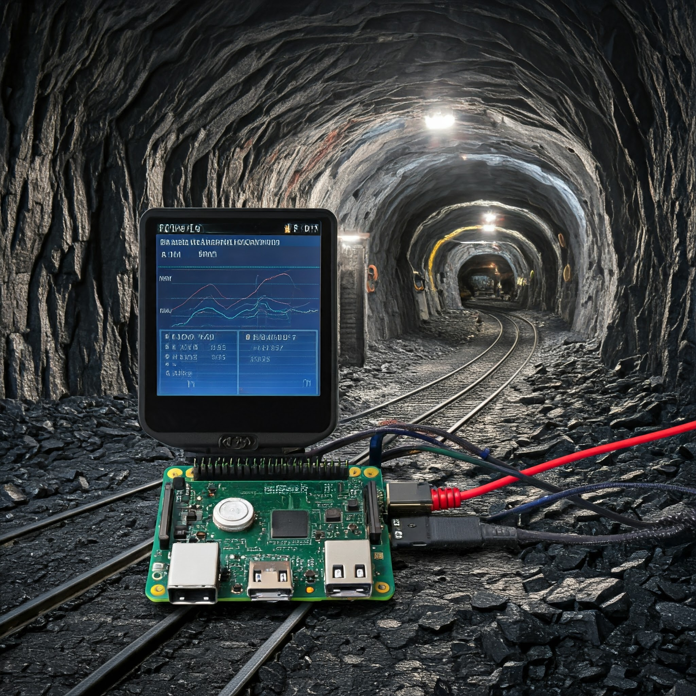

About Me
I am a driven software engineer with expertise in Python, SQL, and web development using HTML, CSS, and JavaScript. Proficient in cybersecurity, operating systems, and DBMS, with a keen interest in innovative projects. Skilled in data analysis and version control, I facilitate effective collaboration with cross-functional teams. Seeking to utilize my technical skills and passion for creative problem-solving in software development and data-driven projects .
Skills
- Programming Languages: Python, SQL
- Core Subjects: Cybersecurity, Operating Systems, DBMS
- Web Development: HTML, CSS, Javascript,PHP
- Version Control: Git
Projects
Project-1:
Automated billing trolley using Arduino and RFID technology
Developed an Arduino and RFID technology-based Automated Billing Trolley to streamline the checkout process. The trolley is equipped with an RFID reader that scans RFID tags on products and communicates with an Arduino microcontroller. Each time an item is placed in the trolley, its information and price are automatically refreshed. This setup continuously calculates the total bill, eliminating the necessity for manual scanning during checkout.
Project-2:
IoT based Earthquake and Hazardous Gases Detection in Coal Mines using Raspberry Pi
Designed an IoT-enabled system for detecting earthquakes and hazardous gases in coal mines, utilizing Raspberry Pi, enhances safety by monitoring seismic activity and identifying harmful gas concentrations. This system employs sensors to measure vibrations and gas levels, transmitting real-time information to a central server over the Internet.
Resume
Contact
Email:shruthi1043@gmail.com
Phone: (123) 456-7890
LinkedIn: Visit my LinkedIn